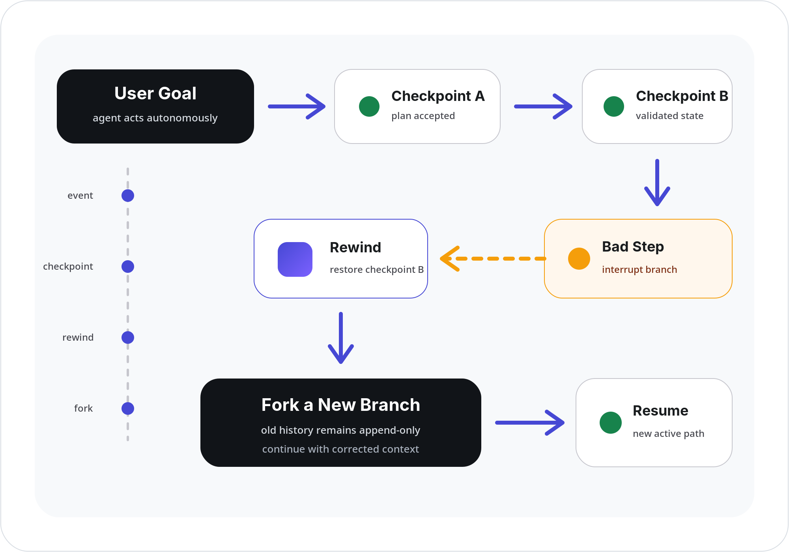
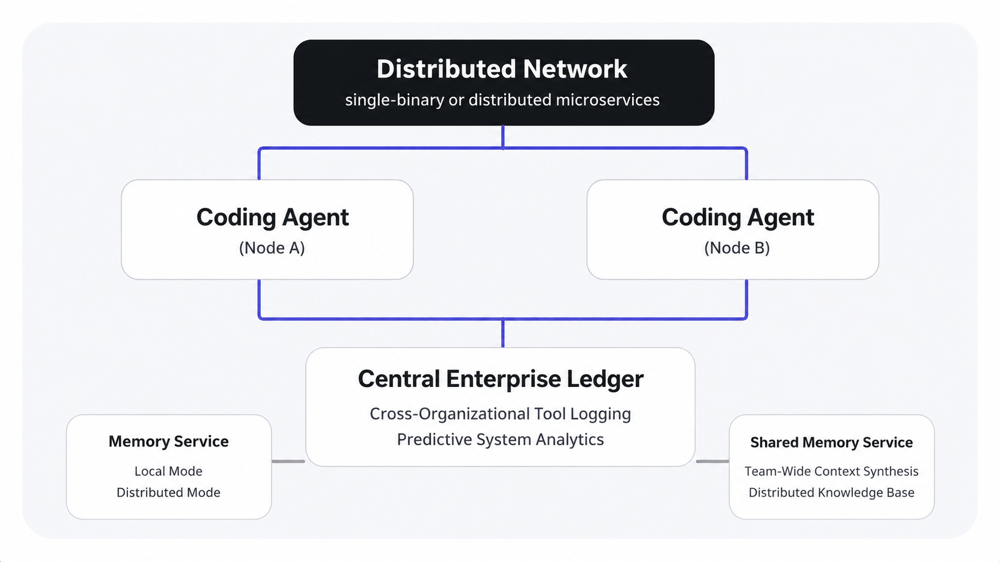
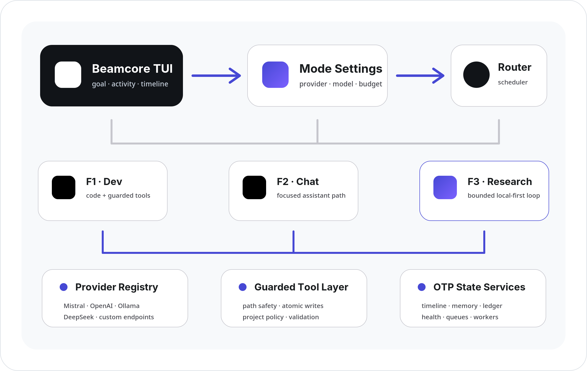

Autonomous execution
The agent researches, edits, validates, and self-corrects without asking for permission before every normal tool call.
Beamcore is a terminal agent that can inspect, modify, test, chat, and research across real projects. It acts inside hard workspace boundaries while you steer execution through an append-only timeline.
F1 · DEV
› Inspect the provider routing and make local model failures visible in the TUI.
✓ workspace indexed
✓ provider path traced
◆ validating targeted fix
Agent
Root cause isolated. Applying the smallest safe change and preserving the current branch.
PRODUCT PRINCIPLE
Beamcore is not an approval loop. Normal allowed actions run autonomously, while hard runtime safety remains enforced by code.
The agent researches, edits, validates, and self-corrects without asking for permission before every normal tool call.
Interrupt, resume, rewind, fork, and abandon timeline branches without deleting the original history.
Workspace-bound paths, project policy, guarded tools, atomic writes, and no arbitrary shell exposed to the model.
THREE MODES · ONE TUI
Each mode resolves its own provider, model, context budget, tool depth, and retry limits before the session starts.
Inspect a workspace, modify files, run guarded validation, delegate bounded sub-tasks, and reason across project structure.
A concise chat path with a deliberately reduced tool surface. Useful when you need an answer, not a coding loop.
Build a compact plan, gather targeted context, maintain a research index, compress findings, and stop at useful checkpoints.
REVERSIBLE TIMELINE
Every meaningful decision can become a durable checkpoint. If the agent takes a bad path, pause the branch, move back, and continue from a clean fork.
Stop scheduling new work while preserving the latest valid session state.
Select an earlier checkpoint without deleting the original timeline branch.
Continue the current or forked branch without replaying completed session steps.

PARALLEL AGENTS · PROVIDER-NEUTRAL RUNTIME
F1 Dev, F2 Chat, and F3 Research keep independent provider and model settings. The same runtime can also coordinate multiple coding nodes through shared memory and durable OTP services.
PARALLEL TOPOLOGY
Independent coding nodes can work concurrently while memory and the central ledger preserve context, traceability, and reusable results.

PROVIDER-NEUTRAL ROUTING
Mode settings resolve F1 Dev, F2 Chat, and F3 Research independently before routing work through guarded tools and supervised OTP state services.

Specialized nodes can work concurrently and synchronize through shared services.
F1, F2, and F3 resolve separate provider, model, budget, and retry settings.
Supervised memory, ledger, health probes, queues, and workers keep sessions durable.
Ollama and other local endpoints receive bounded provider-specific timeouts without duplicate retries.
GUARDED AUTONOMY
Beamcore separates initiative from privilege. The agent can act directly, but it cannot silently escape the selected workspace or bypass runtime policy.
Absolute paths, traversal, and symlink escapes are rejected before filesystem access.
Exact edit operations support checksums, dry runs, atomic writes, verification, and structured diffs.
Repository policy can constrain tools, commands, networks, and write paths at runtime.
Optional local context helpers receive read-only tools and cannot mutate, recurse, or use the network.
GET STARTED
Beamcore is open source under AGPL-3.0. Clone the agent, prepare dependencies, and launch the full-screen TUI.
$ git clone https://github.com/beamcore/beamcore.git
$ cd beamcore
$ make install
$ beamcoreBEAMCORE AGENT